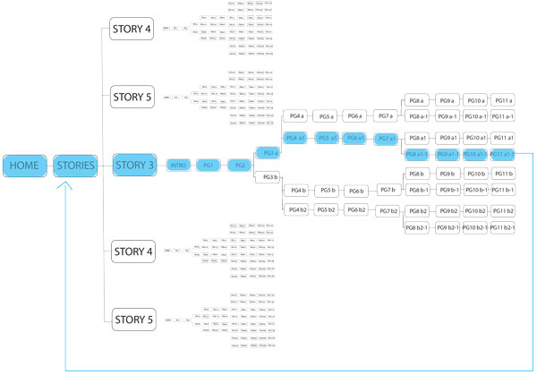

There are many differnt ways that you can navigate through my website. Here I have highlighted a way that a user will potentially move through my website. At the end of the story the user might want to navigate back to the home page where they can then choose another story.
